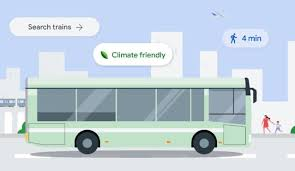

To get started with TransitEase, follow these steps:
Once you’ve signed in, go to the profile section to set up your preferences.
Use the search bar to find available transit options in your area.
If you need further assistance, please contact our support team: